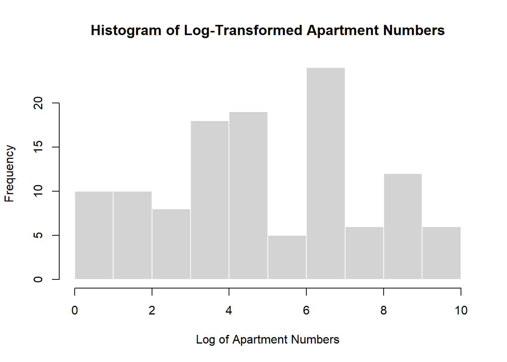

library(haven)
library(tidyverse)
library(dplyr)
library(ggplot2)
library(knitr)
library(stargazer)
library(broom)
library(margins)
library(DBI)
library(RSQLite)STATS506_ProblemSet3
git_address:“https://github.com/JiaweiQin-UM/STATS506.git”
Load Packages
Problem 1
a. Read Files
#read files
# set path
path = "C:/Users/Lenovo/Desktop/24FA/STATS506/HW3"
# read VIX_D dataset
vix_d <- read_xpt(file.path(path, "VIX_D.xpt"))
# read DEMO_D dataset
demo_d <- read_xpt(file.path(path, "DEMO_D.xpt"))
# merge files
df <- merge(vix_d, demo_d, by = "SEQN")
# total size of the sample
nrow(df)[1] 6980The total sample size after inner join is 6980.
b.Proportion of Respondents
# rename columns
names(df)[names(df) == "RIDAGEYR"] <- "Age"
names(df)[names(df) == "VIQ220"] <- "Glass"
names(df)[names(df) == "RIAGENDR"] <- "Gender"
names(df)[names(df) == "RIDRETH1"] <- "Race"
names(df)[names(df) == "INDFMPIR"] <- "PIR"
# transfer to 0-1 variable
# Glass=1: wear glass
# Glass=2: don't wear glass
df$Glass <- ifelse(df$Glass == 1, 1, 0)# calculate proportion
proportions <- df %>%
mutate(Agecat = cut(Age, breaks = seq(0, 100, by = 10), right = FALSE),
Glass = ifelse(Glass == 9, NA, Glass)) %>%
group_by(Agecat) %>%
summarize(proportion = mean(Glass == 1, na.rm = TRUE))
# export table
kable(proportions,
format = "html",
digits = 3,
align = "c",
col.names = c("Age", "Proportion Wearing Glasses"),
caption = "Proportion of Respondents Wearing Glasses by Age",
table.attr = 'style="width:50%; margin-left:auto; margin-right:auto;"') | Age | Proportion Wearing Glasses |
|---|---|
| [10,20) | 0.321 |
| [20,30) | 0.326 |
| [30,40) | 0.359 |
| [40,50) | 0.370 |
| [50,60) | 0.550 |
| [60,70) | 0.622 |
| [70,80) | 0.669 |
| [80,90) | 0.669 |
c. Fit models
df_fit <- df %>%
mutate( Female = as.factor(ifelse(Gender==2,1,0)),
Race = as.factor(Race))1. with age
model1 <- glm(Glass ~ Age, data = df_fit, family = binomial)
summary(model1)
Call:
glm(formula = Glass ~ Age, family = binomial, data = df_fit)
Coefficients:
Estimate Std. Error z value Pr(>|z|)
(Intercept) -1.261893 0.053447 -23.61 <2e-16 ***
Age 0.024684 0.001206 20.48 <2e-16 ***
---
Signif. codes: 0 '***' 0.001 '**' 0.01 '*' 0.05 '.' 0.1 ' ' 1
(Dispersion parameter for binomial family taken to be 1)
Null deviance: 8917.4 on 6546 degrees of freedom
Residual deviance: 8473.7 on 6545 degrees of freedom
(433 observations deleted due to missingness)
AIC: 8477.7
Number of Fisher Scoring iterations: 42. with age, race, gender
model2 <- glm(Glass ~ Age + Race + Female, data = df_fit, family = binomial)
summary(model2)
Call:
glm(formula = Glass ~ Age + Race + Female, family = binomial,
data = df_fit)
Coefficients:
Estimate Std. Error z value Pr(>|z|)
(Intercept) -1.837544 0.077922 -23.582 < 2e-16 ***
Age 0.022587 0.001262 17.892 < 2e-16 ***
Race2 0.157336 0.164280 0.958 0.338199
Race3 0.668994 0.070010 9.556 < 2e-16 ***
Race4 0.262837 0.076574 3.432 0.000598 ***
Race5 0.652075 0.135403 4.816 1.47e-06 ***
Female1 0.501051 0.053005 9.453 < 2e-16 ***
---
Signif. codes: 0 '***' 0.001 '**' 0.01 '*' 0.05 '.' 0.1 ' ' 1
(Dispersion parameter for binomial family taken to be 1)
Null deviance: 8917.4 on 6546 degrees of freedom
Residual deviance: 8275.9 on 6540 degrees of freedom
(433 observations deleted due to missingness)
AIC: 8289.9
Number of Fisher Scoring iterations: 43. with age, race, gender, Poverty Income ratio
model3 <- glm(Glass ~ Age + Race + Female + PIR, data = df_fit, family = binomial)
summary(model3)
Call:
glm(formula = Glass ~ Age + Race + Female + PIR, family = binomial,
data = df_fit)
Coefficients:
Estimate Std. Error z value Pr(>|z|)
(Intercept) -2.017050 0.087797 -22.974 < 2e-16 ***
Age 0.022202 0.001295 17.146 < 2e-16 ***
Race2 0.117483 0.168257 0.698 0.485030
Race3 0.502239 0.075116 6.686 2.29e-11 ***
Race4 0.208817 0.079205 2.636 0.008379 **
Race5 0.534345 0.140139 3.813 0.000137 ***
Female1 0.515109 0.054298 9.487 < 2e-16 ***
PIR 0.113427 0.017699 6.409 1.47e-10 ***
---
Signif. codes: 0 '***' 0.001 '**' 0.01 '*' 0.05 '.' 0.1 ' ' 1
(Dispersion parameter for binomial family taken to be 1)
Null deviance: 8521.3 on 6248 degrees of freedom
Residual deviance: 7896.1 on 6241 degrees of freedom
(731 observations deleted due to missingness)
AIC: 7912.1
Number of Fisher Scoring iterations: 4Summary
# create summarize table
results <- list(model1, model2, model3)
model_summary <- data.frame(
Model = c("Model 1: Age",
"Model 2: Age + Race + Female",
"Model 3: Age + Race + Female + PIR"),
Sample_Size = sapply(results, function(x) sum(!is.na(x$model$Glass))),
Pseudo_R2 = sapply(results, function(x) 1 - (x$deviance / x$null.deviance)),
AIC = sapply(results, AIC)
)
coefficients <- lapply(results, function(model) {
coef(model)
})
coef_names <- unique(unlist(lapply(coefficients, names)))
coefficients_df <- data.frame(matrix(NA, nrow = length(coefficients), ncol = length(coef_names)))
colnames(coefficients_df) <- coef_names
rownames(coefficients_df) <- c("Model 1", "Model 2", "Model 3")
for (i in seq_along(coefficients)) {
coefficients_df[i, names(coefficients[[i]])] <- coefficients[[i]]
}
final_table <- cbind(model_summary, coefficients_df)
stargazer(final_table, type = "text", summary = FALSE,
title = "Estimated Coefficients and Model Statistics",
digits = 3)
Estimated Coefficients and Model Statistics
==================================================================================================================================
Model Sample_Size Pseudo_R2 AIC (Intercept) Age Race2 Race3 Race4 Race5 Female1 PIR
----------------------------------------------------------------------------------------------------------------------------------
Model 1 Model 1: Age 6,547 0.050 8,477.679 -1.262 0.025
Model 2 Model 2: Age + Race + Female 6,547 0.072 8,289.925 -1.838 0.023 0.157 0.669 0.263 0.652 0.501
Model 3 Model 3: Age + Race + Female + PIR 6,249 0.073 7,912.077 -2.017 0.022 0.117 0.502 0.209 0.534 0.515 0.113
----------------------------------------------------------------------------------------------------------------------------------d. Difference Test
summary(model3)
Call:
glm(formula = Glass ~ Age + Race + Female + PIR, family = binomial,
data = df_fit)
Coefficients:
Estimate Std. Error z value Pr(>|z|)
(Intercept) -2.017050 0.087797 -22.974 < 2e-16 ***
Age 0.022202 0.001295 17.146 < 2e-16 ***
Race2 0.117483 0.168257 0.698 0.485030
Race3 0.502239 0.075116 6.686 2.29e-11 ***
Race4 0.208817 0.079205 2.636 0.008379 **
Race5 0.534345 0.140139 3.813 0.000137 ***
Female1 0.515109 0.054298 9.487 < 2e-16 ***
PIR 0.113427 0.017699 6.409 1.47e-10 ***
---
Signif. codes: 0 '***' 0.001 '**' 0.01 '*' 0.05 '.' 0.1 ' ' 1
(Dispersion parameter for binomial family taken to be 1)
Null deviance: 8521.3 on 6248 degrees of freedom
Residual deviance: 7896.1 on 6241 degrees of freedom
(731 observations deleted due to missingness)
AIC: 7912.1
Number of Fisher Scoring iterations: 4# calculate margin effect for female
margins_result <- margins(model3, variable = "Female")
margins_resultAverage marginal effectsglm(formula = Glass ~ Age + Race + Female + PIR, family = binomial, data = df_fit) Female1
0.1142# comparison
pwcompare_result <- summary(margins_result)
pwcompare_result factor AME SE z p lower upper
Female1 0.1142 0.0119 9.6217 0.0000 0.0909 0.1374The estimated odds ratio for females is about 0.52 and is statistically significant. Therefore, the odds of men and women being wears of glasess/contact lenses for distance vision differs.
Additionally, females have a statistically significantly higher probability of wearing glasses/contact lenses for distance vision than males.
Problem 2
# read file
sakila <- dbConnect(SQLite(), "C:/Users/Lenovo/Desktop/24FA/STATS506/HW3/sakila_master.db")
dbListTables(sakila) [1] "actor" "address" "category"
[4] "city" "country" "customer"
[7] "customer_list" "film" "film_actor"
[10] "film_category" "film_list" "film_text"
[13] "inventory" "language" "payment"
[16] "rental" "sales_by_film_category" "sales_by_store"
[19] "staff" "staff_list" "store" dbListFields(sakila, "film") [1] "film_id" "title" "description"
[4] "release_year" "language_id" "original_language_id"
[7] "rental_duration" "rental_rate" "length"
[10] "replacement_cost" "rating" "special_features"
[13] "last_update" dbListFields(sakila, "film_category")[1] "film_id" "category_id" "last_update"dbListFields(sakila, "category")[1] "category_id" "name" "last_update"dbListFields(sakila, "address")[1] "address_id" "address" "address2" "district" "city_id"
[6] "postal_code" "phone" "last_update"dbListFields(sakila, "city")[1] "city_id" "city" "country_id" "last_update"dbListFields(sakila, "country")[1] "country_id" "country" "last_update"a.
dbGetQuery(sakila, "
SELECT release_year AS year, COUNT(*) AS released_total
FROM film
WHERE release_year = ( SELECT MIN(release_year) FROM film )
") year released_total
1 2006 10002006 is the oldest movie from, and 1000 movies were released in that year.
b.
R
fc <- dbGetQuery(sakila, "SELECT * FROM film_category")
cat <- dbGetQuery(sakila, "SELECT * FROM category")
catcount <- table(fc$category_id)
mincat <- which.min(catcount)
c(cat$name[cat$category_id == mincat], catcount[mincat]) 12
"Music" "51" SQL
dbGetQuery(sakila, "
SELECT c.name, COUNT() AS movie_count
FROM film f
JOIN film_category fc ON f.film_id = fc.film_id
JOIN category c ON fc.category_id = c.category_id
GROUP BY c.name
ORDER BY movie_count
LIMIT 1
") name movie_count
1 Music 51Music is the least common in the data, and 51 movies are of this genre.
c.
R
customer <- dbGetQuery(sakila, "SELECT * FROM customer")
address <- dbGetQuery(sakila, "SELECT * FROM address")
city <- dbGetQuery(sakila, "SELECT * FROM city")
country <- dbGetQuery(sakila, "SELECT * FROM country")
merged_data <- customer %>%
left_join(address, by = "address_id") %>%
left_join(city, by = "city_id") %>%
left_join(country, by = "country_id")
merged_data %>%
count(country) %>%
filter(n == 13) country n
1 Argentina 13
2 Nigeria 13SQL
dbGetQuery(sakila, "
SELECT cnty.country AS country, COUNT(*) AS customer_numbers
FROM customer c
JOIN address a ON c.address_id = a.address_id
JOIN city ci ON a.city_id = ci.city_id
JOIN country cnty ON ci.country_id = cnty.country_id
GROUP BY cnty.country
HAVING COUNT(*) = 13
") country customer_numbers
1 Argentina 13
2 Nigeria 13Argentina and Nigeria have exactly 13 customers.
dbDisconnect(sakila)Problem 3
us500 <- read.csv(file.path(path,"us-500.csv"))
head(us500) first_name last_name company_name address city
1 James Butt Benton, John B Jr 6649 N Blue Gum St New Orleans
2 Josephine Darakjy Chanay, Jeffrey A Esq 4 B Blue Ridge Blvd Brighton
3 Art Venere Chemel, James L Cpa 8 W Cerritos Ave #54 Bridgeport
4 Lenna Paprocki Feltz Printing Service 639 Main St Anchorage
5 Donette Foller Printing Dimensions 34 Center St Hamilton
6 Simona Morasca Chapman, Ross E Esq 3 Mcauley Dr Ashland
county state zip phone1 phone2
1 Orleans LA 70116 504-621-8927 504-845-1427
2 Livingston MI 48116 810-292-9388 810-374-9840
3 Gloucester NJ 8014 856-636-8749 856-264-4130
4 Anchorage AK 99501 907-385-4412 907-921-2010
5 Butler OH 45011 513-570-1893 513-549-4561
6 Ashland OH 44805 419-503-2484 419-800-6759
email web
1 jbutt@gmail.com http://www.bentonjohnbjr.com
2 josephine_darakjy@darakjy.org http://www.chanayjeffreyaesq.com
3 art@venere.org http://www.chemeljameslcpa.com
4 lpaprocki@hotmail.com http://www.feltzprintingservice.com
5 donette.foller@cox.net http://www.printingdimensions.com
6 simona@morasca.com http://www.chapmanrosseesq.coma. TLD
length(us500$email[grepl("net$", us500$email)])/nrow(us500)[1] 0.1414% of email addresses are hosted at a domain with TLD “.com”
b. Non Alphanumeric Character
# extract username
usernames <- sub("@.*", "", us500$email)
domains <- sub("\\.[a-z]{3}$", "", sub(".*@", "", us500$email))
# regexp search
username_non_alphanumeric <- grepl("[^a-zA-Z0-9]", usernames)
domain_non_alphanumeric <- grepl("[^a-zA-Z0-9]", domains)
# calculate proportion
mean(username_non_alphanumeric | domain_non_alphanumeric)[1] 0.50650.6% of email addresses have at least one non alphanumeric character.
c. Phone Area Code
ac1 <- substr(us500$phone1, 1, 3)
ac2 <- substr(us500$phone2, 1, 3)
sort(table(c(ac1, ac2)), decreasing = TRUE)[1:5]
973 212 215 410 201
36 28 28 28 24 “973”,“212”,“215”,“410” and “201” are the top 5 most common area codes.
d. Histogram
aprt <- us500$address[grepl("[0-9]+$", us500$address)]
num <- as.numeric(regmatches(aprt, regexpr("[0-9]+$", aprt)))hist(log(num),
main = "Histogram of Log-Transformed Apartment Numbers",
xlab = "Log of Apartment Numbers",
ylab = "Frequency",
border = "white") 
e. Distribution
table(substr(num, 1, 1))
1 2 3 4 5 6 7 8 9
15 13 12 12 15 11 12 11 17 Based on the table, the frequency of most digits is nearly uniform, which contradicts Benford’s Law. This suggests that the dataset may not represent real-world data accurately.